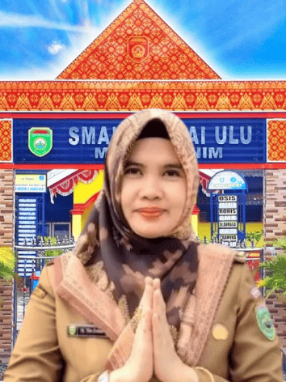

"Pendidikan adalah investasi terbaik untuk masa depan."
Selamat datang di halaman resmi Penerimaan Murid Baru (SPMB) SMAN 1 Lubai Ulu Tahun Ajaran 2026/2027. Kami dengan tangan terbuka menyambut putra-putri terbaik yang ingin bergabung dan meraih prestasi bersama kami.
Proses seleksi dilaksanakan sesuai Petunjuk Teknis SPMB Provinsi Sumatera Selatan berdasarkan Keputusan Gubernur Nomor 136/KPTS/DISDIK/2026, menjamin kesetaraan kesempatan bagi semua calon murid.
Didukung sarana dan prasarana lengkap untuk menunjang proses pembelajaran yang optimal.
Fasilitas komputer modern dengan koneksi internet untuk mendukung pembelajaran berbasis teknologi.
Lab lengkap untuk praktikum Fisika, Kimia, dan Biologi guna memperdalam pemahaman sains.
Koleksi buku lengkap dan ruang baca nyaman untuk mendukung budaya literasi siswa.
Area olahraga multi-fungsi untuk mengembangkan bakat dan kebugaran jasmani siswa.
Tempat ibadah yang nyaman dan bersih untuk mendukung pembinaan karakter religius siswa.
Tersedia berbagai pilihan Ekstrakurikuler untuk mengembangkan bakat dan minat murid.
Deskripsi CCTV
SMAN 1 Lubai Ulu melaksanan Asesmen pembelajaran menggunakan CBT.
Daya tampung resmi yang ditetapkan Dinas Pendidikan Provinsi Sumatera Selatan.
Tersedia empat jalur pendaftaran sesuai ketentuan Permendikdasmen No. 3 Tahun 2025.
Klik masing-masing syarat untuk melihat detail persyaratan yang diperlukan.
Berikut adalah alur atau langkah-langkah pendaftaran SPMB SMAN 1 Lubai Ulu 2026/2027.
Catat tanggal-tanggal penting berikut agar tidak melewatkan tahapan pendaftaran.
Unduh formulir dan dokumen pendukung yang diperlukan dalam proses pendaftaran.
Sampaikan pertanyaan, laporan, atau pengaduan terkait proses SPMB melalui hotline atau formulir pengaduan resmi.
Instagram: @smansalubaiulu
Pendidikan adalah senjata paling ampuh yang bisa kamu gunakan untuk mengubah dunia.